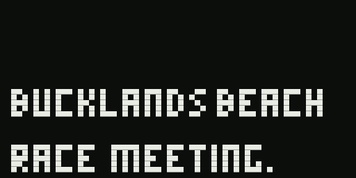
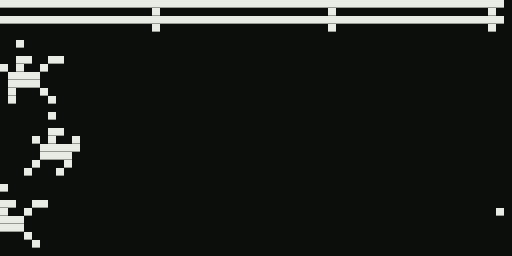
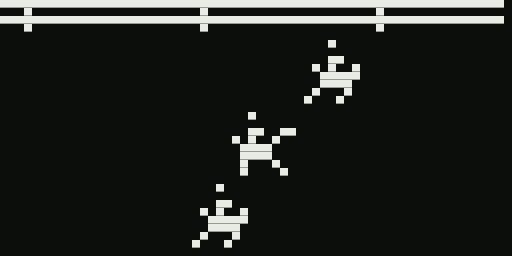

Race Meeting
B.N. Hussey · DREAMER no. 9 (1981-05) p. 17 1K RAM



Three horses run with random speeds and you simply watch the race. There is a 10% chance that a horse is not detected at the winning post and runs a second lap.
Keys
Any key starts a race.
Files
| File | Version | Load | Run |
|---|---|---|---|
| Race Meeting.d68 | main | 0080-03FF | C000 |
Listing as transcribed (with notes): race_meeting.txt
Source
DREAMER no. 9 on archive.org, p. 17 (PDF page 19). Author: B.N. Hussey.
Corrections applied
- 0302 6C08 -> 6C0B (the title overlaps the digit on the scan).
Open doubts
- 035E read as C203 (last digit faint; with C202 horse 1 would never advance).
- The 10% second lap was not tested.